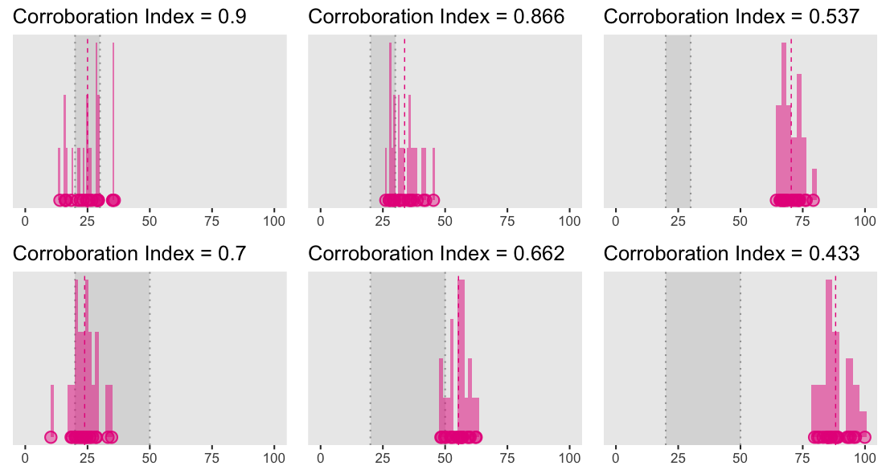

NB: I strongly recommend reading the first part of this series before moving to the second part.
The Meehlian Corroboration-Verisimilitude Theory of Science
In opposition to the positivists of the Vienna Circle, Popper claimed that “theories are not verifiable, but [that] they can be corroborated” (Popper, 1959). Instead of trying to assign probabilities to theories (inductive probabilities), Popper suggests evaluating how many “high falsification risk” tests a theory has survived in order to assess its degree of corroboration.1
The degree of corroboration or discorroboration also depends on how much confidence we have in the “left-side conjuncts” other than the theory itself (Meehl, 1997).2 Put simply, a theory can be said to be more or less strongly corroborated (or discorroborated), depending on both i) our faith in the “left-side conjuncts” and ii) the riskiness of the test the theory has been submitted to.3
The concept of verisimilitude refers to the idea of the truth content of a theory, or its approximation or nearness to truth (Popper, 1968). In other words, while most theories are false4, some contain more “true statements” than others, and have as such higher verisimilitude. Verisimilitude is an ontological concept: it refers to the relationship between the theory and the real world which the theory speaks about. It is not an epistemological concept, it does not refer to the grounds of rational belief (Meehl, 1990).
Interestingly, as argued by Campbell (1990), the concepts of corroboration and verisimilitude can be considered as Popper’s “ad-hoceries”, as:
“[…] corroboration was added to avoid admitting than a”confirmation” of a prediction is so much more informative than a “falsification” if we are exploring in the dark, beyond what we already know (Campbell, 1959, pp. 168–170) [… and] verisimilitude was, before Meehl, mere handwashing toward Popper’s logically incoherent but unsupressible intuition that the theories of physics, for example, were getting closer to the truth.”
In this context, the particularity of Meehl’s work (as explained by Campbell in his commentary of Meehl’s 1990’s paper), has been to combine Popper’s falsificationism with the Lakatosian idea of progressiveness to suggest a neo-Popperian “theory of theory appraisal” (a “metatheory”, from Meehl’s own words), based on the track record of a theory5. We now move to a more thorough discussion of the concepts underlying Meehl’s metatheory.
How to appraise a theory?
Lakatosian defense
One of the main issue we have to deal with is to know how we should react to an apparent falsification of our substantive theory. If we were to follow some kind of folk strict falsificationism, any inconsistent data would be a sufficient argument to abandon our favourite theory. However, this is usually not how the scientific method is conducted (as we discussed in the previous blogpost). In some context, it might seem legitimate to “stick” with our theory, despite an apparent falsification.
The concept of Lakatosian defense refers to one of the strategies that let us “believe” in our substantive theory, despite an apparent falsification. The way this strategy works is by making first a distinction between the hard core of our substantive theory (i.e., \(T\)), and the protective belt, that includes the peripheral portions of \(T\), as well as all the other conjuncts on the left side of the conceptual formula presented in the previous post (i.e., the theoretical auxiliaries \(A_{t}\), the instrumental auxiliaries \(A_{i}\), the ceteris paribus clause \(C_{p}\), the experimental conditions \(C_{n}\), and finally the observations \(O_{1}, O_{2}\)). The Lakatosian defense then consists in avoiding directing “the arrow of the modus tollens” toward the hard core of the theory, but to direct it to the protective belt. In simple words, instead of considering the apparent falsification as a falsification of \(T\), we consider it as a falsification of some other conjuncts of the “left-side”.
I formulate my version of the Lakatos principle thus: Accepting the neo-Popperian view that it is inadvisable to persist in defending a theory against apparent falsifications by ad hoc adjustments (three kinds), the rationale for defending by non-ad hoc adjustments lies in the theory having accumulated credit by strong successes, having lots of money in the bank (Meehl, 1990).
According to Meehl, such a Lakatosian defense might be warranted by the hard core of the theory having high verisimilitude. It would be rational to engage in a Lakatosian defense already has “money in the bank, an impressive track record” (Meehl, 1990, p.122), meaning that the theory has performed well in the past. And the way a theory gets money in the bank is through Salmon’s principle, that we discuss in the next section.
Salmonian damn strange coincidences
To sum up, Meehl says that it is acceptable to engage in a Lakatosian defense when the theory has performed sufficiently well in the past, when it has accumulated enough “money in the bank”. And the way a theory can earn money is through Salmon’s principle of “damn strange coincidences” (Salmon, 1984), that we formulate below:
Salmon’s principle: The main way a theory gets money in the bank is by predicting facts that, absent the theory, would be antecedently improbable.
For instance, if I have a meteorological theory that successfully predicts that it will rain sometime next April, and that this prediction is confirmed by the data, the scientific community will not be much impressed. If my theory enables me to correctly predict which of 5 days in April it rains, they will be more impressed. And if I predict how many millimeters of rainfall there will be on each of these 5 days, they will begin to take my theory very seriously (Meehl, 1990).
We can all feel why this idea of “antecedent implausibility” makes some predictions stronger than others. This principle is useful as a way of appraising theories and assessing the strength of the tests we confront them to. But to assess how strange is a coincidence, we need to take into account the range of a priori plausible numerical values. Clearly, depending on whether we investigate the variability of IQ scores (expressed in points of IQ) of the effects of arsenic dosage in some drug (in mg), a difference or a prediction error of 0.1 might not have the same interpretation (or consequence). To take this into account, Meehl introduces the concept of Spielraum.
The concept of Spielraum
The concept of Spielraum comes from the Vienna Circle, that borrowed the term from Von Kries and is the German word for “field”, “range”, “scope”, and represents the range a priori plausible values (Meehl, 1990). The basic insight behind the idea of Spielraum is to realise that to appraise the power/quality of an interval prediction (e.g., “the IQ of this person should fall in the 111-114 interval”), we need to consider the width of the possible values of the outcome.
The notion of accuracy (in prediction) is a relative term, usually uninterpretable with respect to theory corroboration without the a priori range (Meehl, 1990).
The specification of the limits of the Spielraum can come either from variables definitions (e.g., this scale has a minimum of 0 and a maximum of 20), physical facts (e.g., human height can only be between X and Y cm, where X and Y are the heights of the shortest and tallest human alive, respectively), as well as from our “background knowledge” (Meehl, 1997, p.420).
Put simply, the precision of an interval prediction (i.e., the range of values “tolerated” by a theory) should be interpreted in relation to the range of values that are considered as a priori plausible. Keeping this in mind, we should be ready now to discuss Meehl’s corroboration index.
Closeness and theory tolerance: the corroboration index
In order to “numerify” the track record of a theory, Meehl (1990) introduces its corroboration index \(C_{i}\), computed as follows:
\[C_{i} = Closeness \cdot Intolerance\]
where the closeness corresponds to the inverse of the deviation (the error) between the observed data (the mean of the sample6) and the edge of the range of values tolerated by the theory, in relation to the Spielraum,7 that is:
\[Closeness = 1 - (Deviation / Spielraum) \] The intolerance of the theory is defined as the inverse of the tolerance, which is the range of values tolerated by the theory (e.g., if my theory predicts that an individual X should have an IQ between 111 and 114, the tolerance of my theory is 3), in relation to the Spielraum:8
\[Intolerance = 1 - (Tolerance / Spielraum) \]
To sum up, the corroboration index can be seen as resulting from an interaction between the closeness of the prediction (i.e., by how much the theory missed the data, relatively to the a priori plausible values), and the risk the theory took in its prediction (i.e., the width of the range of tolerated values).
The main contribution of this index seems to lay in its ability to give a continous indication of the degree of corroboration, in contrast to the discrete Popperian falsification. As put by Meehl (1990, p.128):
This is similar to Popper’s original emphasis on corroboration being a function of risk, except that here again it is not yes-or-no falsification but Salmon’s principle that we wish to numerify. The revised methodology retains the Popperian emphasis on riskiness, but now instead of asking “Did I pass the test, which was stiff?” we ask, “How close did I come?”
Below we illustrate how theory strength (the spread of the values it tolerates) and predictive accuracy (the distance between the sample mean and the edge of the predicted interval) jointly determine the corroboration index. The range of values tolerated by the theory is depicted by the gray shaded area (whose bounds are represented by the gray dotted vertical lines), why the mean of the sample is represented by the vertical dashed pink line.

These two rows illustrate what can be considered as a strong versus weak (in relation to each other) theory for three possible relations with data (in column), namely, when theoretical predictions match the data (the first column), when the predictions barely miss the data (the second column), or when they miss the data by a considerably large amount (the third column).
The Shiny app below lets you explore this index in more details by playing with different parameters to see how it affects the corroboration index (the corroboration index is recomputed every time you generate a new sample).
This index is designed in such a way that if a very strong theory has an intolerance of 1 (i.e., it tolerates only a very narrow interval or a single point) and a closeness of 1, then it would have a corroboration index of 1. In the opposite, a weak directional prediction (of the kind we usually find in psychology) would have a theory tolerance of half the Spielraum, that is, an \(Intolerance = 1/2\). For this latter kind of theory the corroboration index will be 0.5 when it hits and will necessarily be inferior to 0.5 when it misses the data.9
Meehl also offers another tool: the cumulative index, which permits to evaluate the track record of a theory, by simply taking its average corroboration index on a series of experiments: \(C = \frac{1}{N} \Sigma C_{i}\), where \(N\) is the number of experiments. Then, we can record the track record of a theory by using this index, combined with the number of experiment, thus “(1, 10)” (Meehl, 1990, p.129). Alternatively, one can present a series of corroboration indexes over a series of \(N\) studies by reporting the number of studies, the average corroboration index as well as the standard deviation of these indexes (\(N, M_{c}, \sigma_{C}\); Meehl, 1990b).10
Overall, Meehl’s proposal invites thinking about a way of quantifying the degree of corroboration of theories by jointly considering the strength of their predictions and their predictive accuracy, in relation to the Spielraum (i.e., the range of a priori plausible values). Although it is not clearly explicit in Meehl’s work whether this index is designed to be used as a conceptual tool only, some of his writings seems to suggest that this index could be used in applied settings as a complement to classical statistics (e.g., Meehl, 1990, p.416-418). For instance, Meehl makes a distinction between three approaches to theory testing: i) the weak use of significance tests to provide weak “confirmation” of weak theories, ii) the strong use of significance testing to discorroborate strong theories and iii) a third strategy that would bypass significance testing by using the above Salmonian principle to corroborate strong theories (Meehl, 1990, p.117). He continues by saying that he is (of course) advocating for the third approach, suggesting that he might envision a use for this index in applied settings.
References
Click to expand
Campbell, D. T. (1990). The Meehlian Corroboration-Verisimilitude Theory of Science. Psychologial Inquiry, 1(2), 142–172.
Mayo, D., & Spanos, A. (Eds.). (2010). Error and inference: Recent exchanges on experimental reasoning, reliability, and the objectivity and rationality of science. Cambridge, England: Cambridge University Press.
Meehl, P. E. (1967). Theory-testing in psychology and physics: A methodological paradox. Philosophy of Science, 34, 103–115.
Meehl, P. E. (1978). Theoretical risks and tabular asterisks: Sir Karl, Sir Ronald, and the slow progress of soft psychology. Journal of Consulting and Clinical Psychology, 46.
Meehl, P. E. (1986). What Social Scientists Don’t Understand. In D. W. Fiske and R. A. Shweder (Eds.) Metatheory in social science: Pluralisms and subjectivities. Chicago: University of Chicago Press, 1986. (Chapter 14, pp.315-338).
Meehl, P. E. (1990). Appraising and amending theories: The strategy of Lakatosian defense and two principles that warrant it. Psychological Inquiry, 1(2), 108–141.
Meehl, P. E. (1997). The problem is epistemology, not statistics: Replace significance tests by confidence intervals and quantify accuracy of risky numerical predictions. In L. L. Harlow, S. A. Mulaik, & J.H. Steiger (Eds.), What if there were no significance tests? (pp. 393-425). Mahwah, NJ: Erlbaum.
Popper, K. (1959/1968). The logic of scientific discovery (4th ed.). London, England: Hutchinson.
Salmon, W. C. (1984). Scientific explanation and the causal structure of the world. Princeton, NJ: Princeton University Press.
Serlin, R. C., & Lapsley, D. K. (1985). Rationality in psychological research: The good enough principle. American Psychologist, 40, 73-83.
Footnotes
Where the term of corroboration, coming from the German Bewährung, has been chosen by Popper to be “probability-neutral”, that is, with no known relation to any word or concept used in probability theory.↩︎
See the conceptual formula of the empirical test of a theory, discussed in the previous blogpost.↩︎
See also Mayo and Spanos (2010), for an account of the connection between frequentist statistical testing and Popper’s ideas of tests severity.↩︎
I mean most quantitative psychological theories but see Meehl (1990, pp. 114–115) for some examples of theories that can literally be true.↩︎
Sorry if this sentence reads a bit heavy. Hopefully, the rest of the post will make it more understandable.↩︎
One could question Meehl’s choice of the mean of the sample as the best estimate to use.↩︎
Considering the error in relation to the Spielraum can also be considered one way to numerify Serlin and Lapsley’s (1985) “good enough” principle (Meehl, 1990, p.128).↩︎
Concerning the IQ example, we might consider as a priori plausible IQ scores between 3 sigmas from the mean, that is, between 55 and 145 (Meehl, 1990, p.128).↩︎
Meehl also shows how to normalise this index between 0 and 1 so that a weak theory is attributed an index of 0 and a strong theory an index of 1.↩︎
Though the index as presented in this post is intended to work for point or interval predictions, Meehl (1990, p.130–134) also explains how to generalise this procedure to function-form predictions.↩︎
Citation
@online{nalborczyk2018,
author = {Nalborczyk, Ladislas},
title = {The {Meehlian} {Corroboration-Verisimilitude} {Theory} of
{Science} - {Part} {II}},
date = {2018-07-20},
url = {https://lnalborczyk.github.io/blog/2018-07-23-corroboration2},
langid = {en}
}